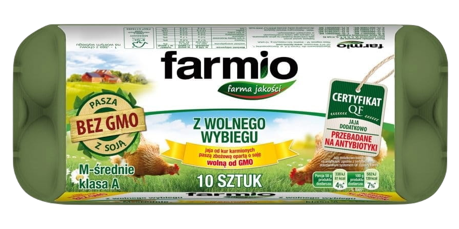
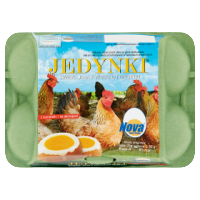
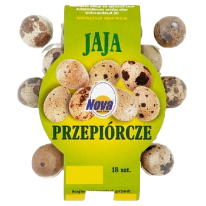

Witam na stronie sklepu Polskie jaja
Tutaj mamy przedstawione topowe kopy jajec, które najczęściej nasi klienci kupują:
Numer 1: Jaja farmio klasy A
Numer 2: Jaja jedynki z wolnego wybiegu
Numer 3: Jaja przepiórcze malutkie idealne
Numer 4: Jaja zielononóżki, cudowne jaja od cudownych kurek